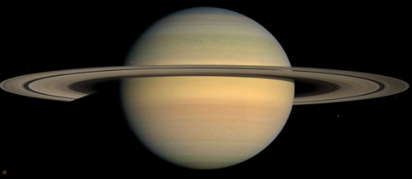

Saturno
Saturno es un planeta de color amarillento y, junto a Júpiter, el más caliente. Lo más especial de Saturno son sus famosos anillos compuesto de rocas y agua helada.Algunos de sus satélites naturales sonHyperion e Iapeto.
Su nombre es en honor a Saturno, dios romano de la agricultura.
